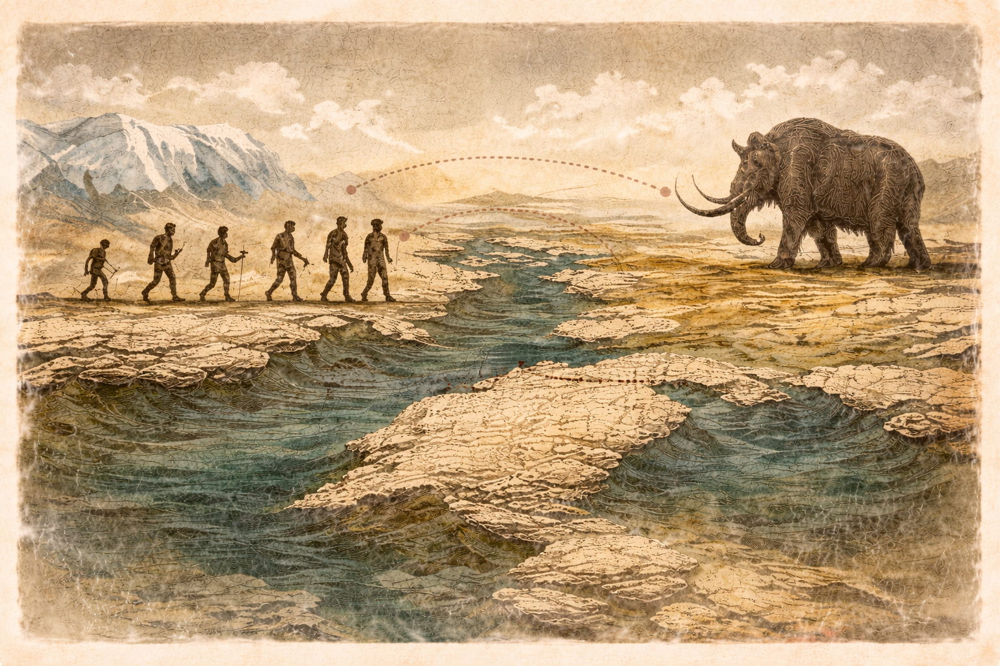

Quick help
Explore mode: click to view coordinates and add pins with notes.
Search countries, drop personal pins, and measure real-world distances all inside a single, privacy-first HTML map that runs entirely in your browser.

Powerful yet simple tools designed for exploration, learning, and planning all inside a single interactive map.
Quickly locate any country and zoom directly to its position on the map.
Mark meaningful places with notes perfect for research and travel planning.
Measure real-world distances using precise geodesic calculations.
Everything runs locally in your browser no accounts or analytics.
Global insights
Maps tell more than locations they reveal how people live, trade, and adapt. Switch between perspectives below to see how population, economy, and environment shape our world.
Humanity is not spread evenly across the planet. People cluster in regions with access to water, fertile land, stable climates, and economic opportunity leaving vast areas sparsely populated.
More than half of the world’s population lives on a small fraction of Earth’s land, primarily near coastlines and river systems.
Population density influences housing, transportation, healthcare access, and how cities grow over time.

Drag the slider to travel through time and explore key moments that shaped human civilization and global geography.

Humans migrated across continents following food sources, climate patterns, and land bridges. Geography shaped survival and settlement long before written history.
Interact with the world map through simple, intuitive modes. Each mode is designed to help you explore, measure, and save geographic information with confidence.

Click anywhere on the map to instantly view coordinates, inspect locations, or drop personal pins with notes. This mode lets you freely explore countries, cities, and regions at your own pace.
Perfect for learning geography, researching places, or bookmarking meaningful locations.

Measure real-world distances by clicking multiple points on the map. The tool calculates accurate geodesic distances that account for the Earth’s curvature.
Useful for travel planning, route comparison, logistics, and understanding spatial scale.

All saved pins and notes are stored directly in your browser using local storage. Your data never leaves your device.
No accounts required, no servers involved, and no tracking of any kind.